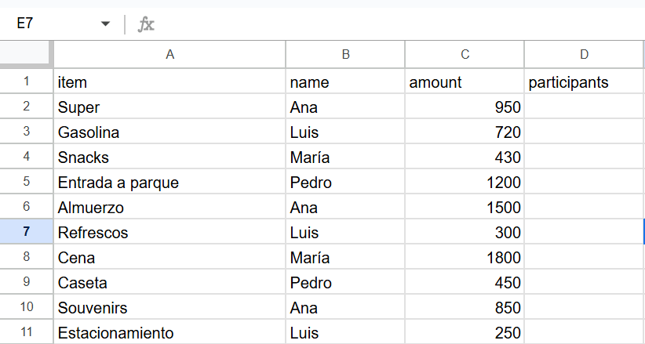
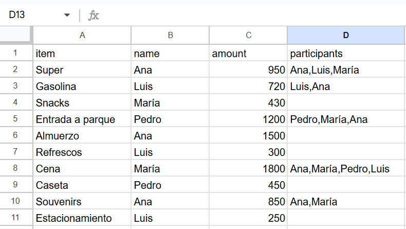
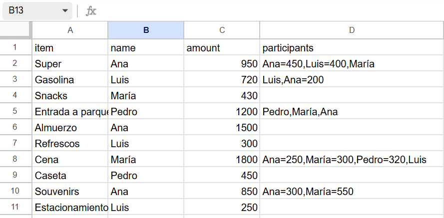

Esta aplicación te ayuda a dividir gastos entre un grupo de personas de manera flexible y equitativa.
Puedes especificar diferentes formas de dividir cada gasto, desde división equitativa hasta montos específicos por persona.
Para comenzar, introduce tus gastos en una hoja de cálculo de Google y copia la URL a continuación.
La hoja de calculo debe ser visible públicamente para que la aplicación pueda acceder a ella.
Si no tienes una hoja de cálculo, puedes usar este ejemplo para comenzar:
https://docs.google.com/spreadsheets/d/1dsHb32ksG2k_YNeneAodtBOU_xsmXlcK8ClqK9L0fRk/edit?usp=sharing
Estructura de la Hoja de Cálculo
La hoja de cálculo debe tener las siguientes columnas:
Columna
Descripción
Obligatorio
item
Descripción del gasto (ej: "Supermercado", "Gasolina")
Sí
name
Nombre de quien realizó el pago
Sí
amount
Monto total del gasto
Sí
participants
Quiénes participan en el gasto y cómo se divide
No
Por ejemplo:

Formas de Dividir los Gastos
1. División Equitativa entre Todos
Deja la columna 'participants' vacía para dividir el gasto equitativamente entre todos los participantes.
item
name
amount
participants
Snacks
María
430
Por ejemplo:
Puedes usar el campo de "participantes adicionales" para incluir a aquellos participantes que no hicieron un gasto o cuyo nombre no aparece en la hoja de cálculo. Estos participantes solo serán considerados en todos los gastos donde participan todos. Los nombres de los participantes deben ponerse separados por comas.
2. División Equitativa entre Algunos
Lista los nombres de los participantes separados por comas:
item
name
amount
participants
Gasolina
Luis
720
Luis,Ana,María
Por ejemplo:

3. División con Montos Específicos
Usa el símbolo = para asignar montos específicos:
item
name
amount
participants
Almuerzo
Ana
1500
Ana=500,Luis=500,María=500
Por ejemplo:

4. División Mixta
Combina montos específicos con división equitativa del resto:
item
name
amount
participants
Super
Ana
950
Ana=400,Luis=400,María
En este ejemplo, María pagará los $150 restantes.
Consejos y Advertencias
Para una división equitativa entre varios participantes, simplemente lista sus nombres separados por comas sin usar el símbolo =.
Si quieres incluir a alguien que no ha hecho ningún gasto, añádelo en el campo de "participantes adicionales" separado por comas.
La suma de los montos específicos no puede exceder el monto total del gasto.
Si algunos participantes tienen montos específicos y otros no, el monto restante se dividirá equitativamente entre los participantes sin monto específico.
Por ejemplo, si Ana=500,Luis,María, María pagará el monto restante de forma equitativa con Ana y Luis.
Todos los nombres en la columna 'participants' deben corresponder exactamente a los nombres de los participantes del grupo. Si hay un error de ortografía, como "Ana" en lugar de "ana", la aplicación no podrá dividir el gasto correctamente.
Revisa siempre el resumen generado por la aplicación para verificar que los gastos se hayan dividido como esperas.
La aplicación no guarda ni almacena ninguna información de las hojas de cálculo que procesa, tus datos son privados y nunca salen de tu navegador.